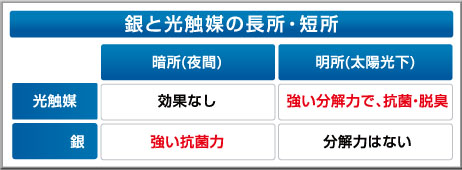
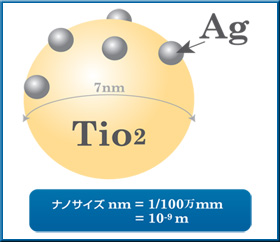
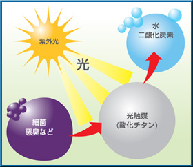
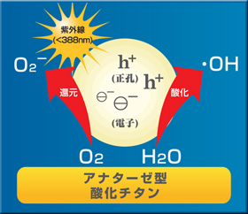
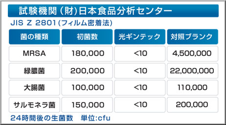
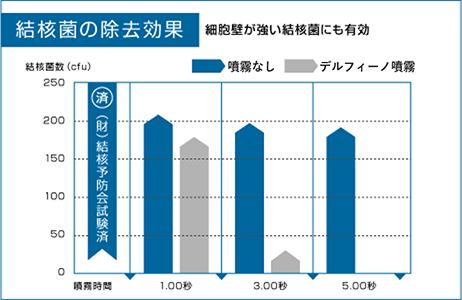
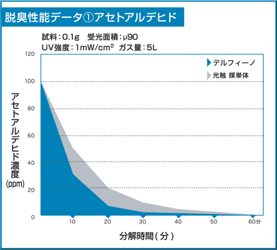
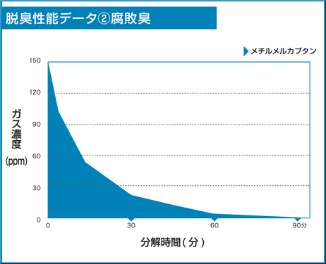
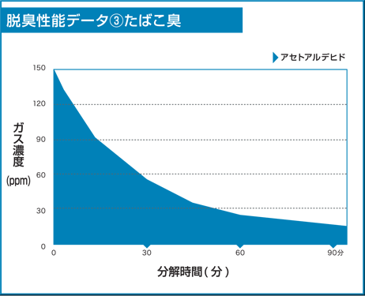
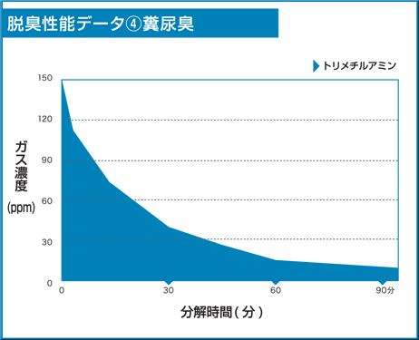

技術情報
デルフィーノのメカニズム
デルフィーノのメカニズムは「微粒子触媒による抗菌」です。
反応が異なる複数の触媒を組み合わせて使用する事で、相互作用や、補完作用が働き、 より強力な「抗菌」を実現しました。

植物の光合成のように、光を当てると化学反応を起こす「光触媒」技術は、二酸化チタン（光触媒）に光が当たると強力な活性酸素を生成し、有害な有機物などを無害な水と二酸化炭素に分解する効果を有していますが、光のないところでは効果を発揮できません。
デルフィーノの技術
デルフィーノの材料構成
そこで、光触媒の酸化チタンに銀とプラチナを配合させ、光のまったくない場所においてもその効果を発揮することを可能にしたのがデルフィーノなのです。
デルフィーノは非常に小さいサイズの銀メタル「Ag」と光触媒であるアナターゼ型酸化チタン「TiO2」が組み合わさって構成されています。
- 『銀＋光触媒』構成イメージ
 - ナノサイズのアナターゼ型酸化チタンに、そのチタンよりもさらに小さいサイズの銀メタルを吸着させることで抗菌・解毒・脱臭性能などの向上に相乗効果を発揮します。
光触媒、アナターゼ型酸化チタンの働きは太陽光を受けて光合成し、水、二酸化炭素を酸素・炭水化物にする植物とイメージが似ています。つまり紫外線（光）を受けて、細菌・悪臭などを『分解』し、無害な水・二酸化炭素へ変える働きをアナターゼ型酸化チタンは持っています。
- 『銀＋光触媒』構成イメージ
 - 酸化チタンの表面に光が当たると、有害な有機物などを無害な「水」と「二酸化炭素」に分解します。
細菌などの有機物を分解するメカニズムは下記の図にあるように、活性酸素によって、有機物を水や二酸化炭素へ分解します。活性酸素は人の体内でも様々な働きをする事が知られていますが、体内に入った細菌を白血球やマクロファージが細菌を分解する際にも活性酸素を活用しています。
- 分解イメージ
 - 活性酸素により、有機物を水や二酸化炭素などに分解する。
抗菌性能の検証データ
- 抗菌性能データ① 細菌
- 
- 抗菌性能データ② 結核菌
- 
防臭性能の検証データ
- 脱臭性能データ1 アセトアルデヒド
- 
- 脱臭性能データ2 腐敗臭
- 
- 脱臭性能データ3 たばこ臭
- 
- 脱臭性能データ4 糞尿臭
- 